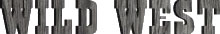

basekamp space > Events
Wild West
Invite
Images
Press release
Download pdf (2.5M)
Press release

Stefka Ammon + + + +Björn Hegardt + + + +Ethan D. Jackson + + + +Gudrun Rauwolf
WILD WEST is a traveling exhibition of work by four artists from Germany, Norway and the US, investigating the cross-cultural fascination with the Great American West. The exhibition revolves around a collaborative structure and media archive that helps to elaborate on and inform works created by the individual artists. WILD WEST runs through December 12
All participating artists deal with projections onto a reality which as such
no longer exists, has never existed, or only exists in reproductions:
The "Wild West", a landscape of longing with its "Cowboys and
Indians" that is available to everyone.
Human images and symbols which everyone understands, but which do not correspond
to those from which they have been borrowed. Landscapes that refer to a different
reality than the one they are supposed to represent.
The spectrum of investigations comprises not only those projections that originate
in Europe; the USA also reproduces its own fictional reality again and again.
Stefka Ammon begins with the German phenomenon of "Winnetou" (a
fictional Apache hero created by the writer Karl May in the late 19th century),
testing her feelings against reality among the Mescalero Apaches in New Mexico,
USA. Work in the show includes photography and video projection.
Björn Hegardt works in the medium of analog photography. The symbols
and signs of Wild West are placed in the cityscape of Berlin. By playing with
our surroundings he creates distortions of reality.
Ethan D. Jackson makes use of digital montages from Western movies (in VHS
format) shot in Europe. Restored to cinescope format, the images become a
projection onto the Arab world.
Gudrun Rauwolf follows the route of German anthropologist Abby Warburg's 1895
journey through the Southwest of the USA in order to explore new paths and
branches, new junctions. Work in the exhibition involves photography and text
in three dimensional installation.